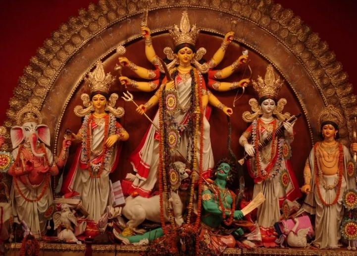
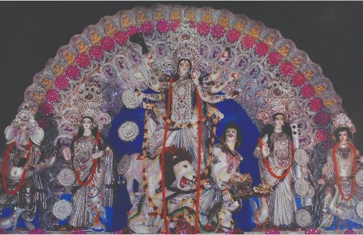
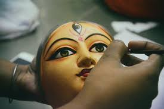
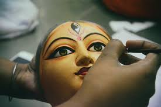
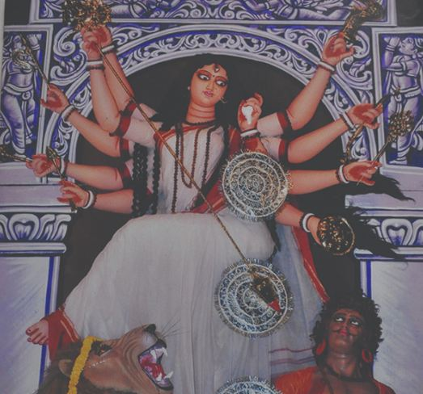

Play This To Get Durga Puja Vibes
༺ Durga Puja In Kolkata ༻

Introduction
Located in eastern India along the Hoogly river, Kolkata (formerly known as Kolkata) is often referred to as the cultural capital of India. With the grand colonial architecture, rich traditions, beautiful music and art, this city has a unique character. As a home to esteemed artists like Rabindranath Tagore and Satyajit Ray, among others, the people of this city have a special appreciation for literature as well as cinema.The city also provides an unparalleled religious and cultural experience of Durga puja each year.
“Dugga Dugga “echo the united voices of all the ladies in the household as they move towards the pandals for pujo, wishing for a safe journey ahead in life. The sound of intense beats coming from the dhak mixed with the aroma of the dhunuchi lit in every house, park or corner fills the streets of Kolkata. Clad in the most beautiful attires, adorning the heaviest of jewels and thickest of bangles with sindoor and bindis on their temple, the women seem to walk a step ahead of the men today. After all, Durga pujo is the day of the Devi. Nothing but colour and festivity flow through the lanes in the nine days that Maa Durga stays in her basha (house) with her four children, only to be united with her husband Shiva on the tenth day, (also known as Vijayadashami). But does it really end there? The massive grandeur and style of Durga puja is not restricted to being just a nine-day festival. It houses itself in the hearts of the devotees who utter “Maa Dugga” at the smallest of hiccups in life. The resounding ullu (a high-pitched ululation sound created by striking both cheeks with the tongue believed to be very auspicious and said to ward off any evil) echoes in the streets of the city long after the pujo
is all wrapped up.

Birth Of Devi Durga Maa
The legends speak of Goddess Durga as a creation of the three most powerful Devas (Gods) in the Hindu Pantheon - Brahma (the creator), Vishnu (the preserver) and Shiva (the destroyer). The story of Durga's birth is narrated in the Devi Bhagvatam. According to this sacred text, once a son called Mahishasura was born to an Asura (demon). Born as an Asura, he saw the victory of Devas over Asuras in every fight. Annoyed by the constant defeat of the Asuras, Mahishasura decided to perform a tapasaya (a long penance) to please the Devas. Years went by.Impressed by Mahishasura's dedication, Lord Brahma decided to grant him a boon. Elated at such an opportunity, Mahishasura asked Brahma to bless him such that neither a man nor a God could kill him. Thus, his death would lie only in the hands of a woman - which in his mind was impossible. Taking advantage of the boon, Mahishasura, along with his troop of Asuras, invaded the Earth. He looted and killed with impunity. Soon, raging with power, he decided to take over heaven believing he could be the ruler of all the three realms. The battle between the Asuras and the Devas was ferocious. Mashishasura finally defeated the army of Indra in Amravati. Humiliated, the Devas met with theTridevas, hoping to find a solution. Frustrated and angry at the defeat of the Devas, the Tridevas started to think. “Only a woman can kill Mahishasura” said Lord Brahma, thinking about the boon he had given the Asura. But which woman in the three realms was strong enough to take on the battle? The Tridevas put their minds together and using their powers created energy that took the form of Devi Durga. Each of the Devas gave their weapon to the Devi to help her kill Mahishasura. Himavat, the God of Himalaya, gave the Devi a Lion to mount on.
.jpg) 

Initially, when Durga approached Amravati, Mahishasura laughed at the thought of fighting a woman. But as the war raged, Mahishasura realised that he was no match for the supreme powers embodied within the Devi. In the ten days of battle, the Asura kept changing forms to confuse her, but the Devi never missed her aim. As soon as the Asura changed to his original form, a buffalo, Durga swiftly beheaded him, thus freeing heaven and earth of the tyrant. Hence, Durga came to be known as Mahishasura Mardini (The Killer of Mahishasura). This last scene is replicated in many of the idols of the Devi worshipped in the Durga puja. In some idols the stance of Maa Durga while killing the Asura is similar to that of Shiva during Tandava.
In most parts of the country, the festival commemorates the victory of the goddess over a demon called Mahishasura. As told by Hindu mythology, the demon was set out to wage war against the gods and it was up to Durga to slay him and protect earth. She began her battle against the demon on the seventh day of Navratri, known as Maha Saptami and slayed him by the final day of Vijay Dashami.
The goddess, known to Hindus as the'destroyer of evil', is characterized by her ten arms carrying various lethal weapons, as well as her vehicle - the lion. Also known as Bhavani, Amba, Chandika, Gauri, Parvati, Mahishasuramardini, Durga is the 'Mother goddess' and the 'Protector of the Righteous' to Hindu devotees.
Though the festival is considered to date back to ancient times in the Hindu religion, the first historic record of such a celebration of the goddess is available from the 1500s in West Bengal. However, the festival is considered to have gained a lot of prominence and have emerged to its current status as one of the country's largest festivals during the country's independence movement. The goddess was considered by many to be an icon for the country and its freedom struggle.
Today, the festival is celebrated with song and dance, fasting followed by feasts, elaborate decorations, and pujas or grand ceremonies at temples and religious recitals. In some parts of the country idols of the goddess are immersed in water, whereas in other parts of the country young girls dress as the goddess and partake in various rituals at temples and public celebrations.
